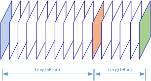

正文
- h.264的POC计算
- 指数哥伦布编码
- h.264加权预测
- h.264码率控制
- h.264直接预测
- h.264 FMO
- h.264参考图像列表、解码图像缓存
- h.264 mvp求解过程
- UMHexagonS搜索过程
- h.264全搜索以及快速全搜索算法
- h.264 率失真优化
- EPZS搜索过程
- Intra Chroma Prediction
- Intra Luma Prediction
- H.264 Transform
- H.264 Quantization
- Quantization Method
- h.264 Mode Decision
- h.264 Bi-Predictive Motion Search
- h.264语法结构分析
- h.264宏块与子宏块类型
- h.264 scanning process for transform coefficients
- CAVLC
- CABAC
- 算术编码JM实现
- h.264并行解码算法分析
- h.264 去块滤波
- h.264并行解码算法2D-Wave实现（基于多核非共享内存系统）
- h.264并行解码算法2D-Wave实现（基于多核共享内存系统）
- h.264并行解码算法3D-Wave实现（基于多核共享内存系统）
- h.264并行熵解码
- CABAC总结与补充讨论
- ffmpeg h264并行解码
- ffmpeg h.264解码所用的主要缓冲区介绍

帧间运动是基于视频亮度（luma）不发生改变的一个假设，而在视频序列中经常能遇到亮度变化的场景，比如淡入淡出、镜头光圈调整、整体或局部光源改变等，在这些场景中，简单帧间运动补偿的效果可想而知（实际编码中遇到亮度变化的宏块，R-D模型的最后结果通常都是用帧内预测编码），加权预测的提出就是为 了应对亮度变化的场景。
在h.264中两种预测模式：显示模式（explicit mode）与隐式模式（implicit mode），另外还有一种默认预测模式，不过这相当于不进行预测。
P帧与B帧都有显式模式，隐式模式只有B帧适用。至于怎么区分两种模式，简单来说，显式模式，需要在片头中传输权重（weight），而隐式模式则不需要。
加权预测可以分为三个步骤：
- 亮度变化检测。一般是用阈值判断亮度是否发生变化。
- 确定权重与偏移。就目前来说，用的都是简单的加权预测算法，这步是跟亮度变化检测连在一起的，因为是用权重来判断亮度是否发生了变化。
- 亮度补偿，把参考帧通过权重与偏移的线性补偿得到加权参考帧。
显式模式
对于显式模式来说，我们可以认为亮度在当前帧与参考帧是线性变化的，既有如下关系：
$LumaCur = \frac {weight \times LumaRef + offset} {2^5}$
其中权重（weight）会被归一化为32(2^5)，因此我们就可以用weight与offset来表示两帧亮度的变化:
$weight = 2^5 \cdot \frac {\sum {LumaCur_i}_j} {\sum {LumaRef_i}_j} $
$\left{\begin{matrix}
0 \leq i < imgWidth\
0 \leq j < imgHeight
\end{matrix}\right.$
尽管这种用整个帧的亮度做比较会忽视图像的局部变化，但是由于其简单的计算方式，目前JM还是用的这种方法来得到权重。当然，在得到权重之后我们需要判断该权重是否超出既定的阈值，如果超出阈值则表示亮度没有发生变化，采用默认的加权预测（即不预测）。
$offset = 0$ 在JM中$offset$默认为0
隐式模式
隐式模式也同样是基于亮度线性变化的假设。B帧与其两个参考帧：RefFront与RefBack在POC位置上保持着线性的关系

$\begin{align*}
weightBack &= 2^6 \cdot \frac {LengthFront} {LengthFront + LengthBack} \
weightFront &= 2^6 - weightBack
\end{align*}$
无论前向参考帧与后向参考帧距离有多长，最终都会归一化为64，然后求出两个参考帧的权重
最后的亮度补偿只是把参考帧用weight与offset进行线性处理而已
${{Luma_i}_j}' = \frac{weight \times {LumaRef_i}_j + offset} {2^n}$ |
最最后需要补充一句的是，因为当前还没确定应该用参考帧列表中的哪一帧作为当前帧的参考帧，所以加权预测必须对当前参考帧列表中的所有帧求出$weight$与$offset$，而隐式模式，更是需要对$listX[0]$与$listX[1]$两个参考帧列表中所有的帧进行$listXSize[0] \times listXSize[1]$次配对后，再分别求出每对参考帧的两个$weight$与$offset$
欧长坤 © 2016-2025 版权所有， 采用知识共享署名-非商业性使用-禁止演绎 4.0 国际许可协议许可，代码使用 MIT 协议开源。
如果你认为本书对你起到了帮助，可以资助作者。